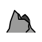
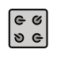

O Bosque dos Ângulos
Bem-vindo ao Trigomante: A Jornada do Círculo. Antes de conjurar qualquer feitiço, todo aprendiz precisa dominar o alicerce de toda magia deste reino: razão, proporção e as primeiras relações entre ângulos e lados.

Foto: Mat Delpidio em Unsplash

Ora, ora, um novo aprendiz! A magia deste reino não nasce de palavras aleatórias: ela nasce da precisão de formas, ciclos e proporções sagradas. Antes de invocar qualquer círculo, você precisa entender a relação entre ângulos e lados. Vamos começar pelo início: razão e proporção.
 Razão e Proporção
Razão e Proporção
Uma razão é a relação matemática entre dois valores de mesma grandeza, como 2/4: o primeiro termo é o antecedente, o segundo é o consequente. Uma proporção é a igualdade entre duas ou mais razões (A/B = C/D), gerando uma constante de proporcionalidade (K). Ela pode ser direta (as grandezas mudam no mesmo sentido, como 2/4 e 4/8) ou inversa (mudam em sentidos opostos, mantendo o produto constante).
 Magia Ancestral
Magia Ancestral
Egípcios e babilônios já usavam proporções há 3000 a.C. para erguer templos e pirâmides, como registra o Papiro de Rhind. Por volta de 300 a.C., Euclides formalizou a teoria das proporções no Livro V de Os Elementos, integrando o trabalho de Eudoxo e resolvendo a "crise dos irracionais" que atormentava os pitagóricos: agora era possível comparar tanto números inteiros quanto grandezas incomensuráveis.
| Ângulo | Radianos | Seno | Cosseno | Tangente |
|---|---|---|---|---|
| 0° | 0 | 0 | 1 | 0 |
| 30° | π/6 | 1/2 | √3/2 | √3/3 |
| 45° | π/4 | √2/2 | √2/2 | 1 |
| 60° | π/3 | √3/2 | 1/2 | √3 |
| 90° | π/2 | 1 | 0 | não definida |
π rad = 180°. Pra converter graus em radianos, multiplique por π/180. Pra converter radianos em graus, multiplique por 180/π. Guarde essa fórmula: ela é a chave de praticamente todo feitiço deste reino.
As Três Razões Fundamentais
Num triângulo retângulo, pra um ângulo α: seno é o cateto oposto dividido pela hipotenusa; cosseno é o cateto adjacente dividido pela hipotenusa; tangente é o cateto oposto dividido pelo cateto adjacente (ou, de forma equivalente, sen α / cos α). Memorize os valores da tabela acima para 30°, 45° e 60°: eles reaparecem em praticamente toda missão do reino.
// Um aprendiz tenta calcular a tangente de 90°
tan(90°) = sen(90°) / cos(90°)
tan(90°) = 1 / 0
tan(90°) = 0Qual é o problema neste feitiço?
 Toque nas runas na ordem certa pra reconstruir a palavra.
Toque nas runas na ordem certa pra reconstruir a palavra.
O Círculo de Invocação
Toda magia de verdade acontece dentro de um círculo. Aqui você entra na arena de poder onde ângulos viram coordenadas e coordenadas viram feitiço.

Foto: Johnny Briggs em Unsplash
Reparou no meu cajado? Um círculo de raio exatamente 1, centrado na origem. É a arena de invocação: todo ponto sobre ela guarda um par de coordenadas mágicas. Sentido positivo é sempre anti-horário: nunca esqueça disso.
 A Circunferência Trigonométrica
A Circunferência Trigonométrica
É uma circunferência de raio 1, centrada na origem do plano cartesiano, com sentido positivo anti-horário. Pra qualquer ponto P correspondente a um arco de medida α: cos α é a abscissa (coordenada x) e sen α é a ordenada (coordenada y) do ponto. A tangente é definida como tg α = sen α / cos α, sempre que cos α ≠ 0.
sen²α + cos²α = 1. Essa relação vem direto do Teorema de Pitágoras aplicado ao triângulo formado dentro do círculo, e sustenta praticamente toda a magia trigonométrica do reino.
| Quadrante | Seno | Cosseno | Tangente |
|---|---|---|---|
| 1º (0° a 90°) | + | + | + |
| 2º (90° a 180°) | + | − | − |
| 3º (180° a 270°) | − | − | + |
| 4º (270° a 360°) | − | + | − |
 Arcos Côngruos
Arcos Côngruos
Dois arcos são côngruos quando terminam no mesmo ponto do ciclo, diferindo apenas por um número inteiro de voltas completas: α + k·360° (ou α + 2kπ, com k ∈ ℤ). É assim que um Arquimago reduz um arco gigantesco (como 1300°) ou negativo (como −1200°) até sua primeira passagem positiva, dentro de uma única volta.
// Um aprendiz apressado calcula sen²α + cos²α pra um ângulo qualquer
sen(60°) = √3/2
cos(60°) = 1/2
sen²(60°) + cos²(60°) = 3/4 + 1/4 = 2Qual é o problema neste feitiço?
Coloque na ordem certa o ritual pra resolver qualquer problema prático de trigonometria.
A Ordem dos Construtores
A magia mais antiga do reino não vive nos livros: vive nas conchas, nas flores e nas catedrais. Chegou a hora de aprender a Proporção Divina.

Foto: Marek Piwnicki em Unsplash

Ah, a Ordem dos Construtores. Aqui a magia não é sobre resolver: é sobre projetar. A harmonia que você sente ao olhar pra uma catedral, uma concha ou até um rosto bonito não é acaso: é geometria mensurável. Chamamos essa proporção de φ (phi).
 A Razão Áurea (φ)
A Razão Áurea (φ)
A Proporção Áurea nasce quando dividimos um segmento em duas partes de modo que a razão entre a menor parte e a maior seja igual à razão entre a maior parte e o todo. O resultado é a constante φ ≈ 0,618 (ou 1,618 para o seu inverso): considerada, desde a Antiguidade, a relação mais harmoniosa entre dois segmentos.
A Sequência de Fibonacci
Proposta por Leonardo de Pisa em 1202, a sequência de Fibonacci (1, 1, 2, 3, 5, 8, 13, 21, 34, 55, 89, 144...) tem uma propriedade fascinante: a razão entre termos consecutivos se aproxima cada vez mais de φ conforme a sequência avança.
| Razão Fibonacci | Aproximação decimal |
|---|---|
| 13 / 21 | 0,619047... |
| 21 / 34 | 0,617647... |
| 34 / 55 | 0,618181... |
| 144 / 233 | 0,618025... |
Catedrais e Monumentos
A fachada do Partenon (Grécia, séc. V a.C.) se encaixa quase perfeitamente num Retângulo de Ouro. A Catedral de Notre Dame de Chartres usa "geometria sagrada" baseada no pentagrama para sustentar seus arcos ogivais e a altura gótica. Na era moderna, Le Corbusier usou retângulos áureos em Paris, a sede da ONU incorpora três retângulos áureos horizontais, e Leonardo da Vinci alinhou os traços da Mona Lisa com divisões áureas do rosto.
A Proporção na Natureza e no Corpo
Sementes de girassol e pétalas de margarida se organizam em espirais que seguem números de Fibonacci (como 21 e 34). A concha do Nautilus segue a Espiral de Ouro. No corpo humano, o umbigo marca o ponto áureo da altura total, as articulações dos dedos guardam a mesma proporção entre si, e a odontologia estética usa φ para posicionar os dentes frontais.
A antiga Estação Júlio Prestes foi restaurada em 1999 e hoje é sede da OSESP. Seu teto móvel ajusta volume e reverberação conforme o repertório, painéis de madeira e "skyline" difundem o som, e a planta do prédio pode ser sobreposta por uma Espiral de Ouro, alinhando funcionalidade acústica com harmonia geométrica.
Responda antes que a barra de mana zere!
O Enigma dos Guardiões do Tempo
Algo se move nas sombras da torre-relógio do reino. Antes de você seguir adiante, os Guardiões do Tempo exigem provas de que você entende movimento periódico.

Foto: Florian Schindler em Unsplash

Nada de facilitar. Movimento periódico é aquilo que se repete em intervalos iguais, como os ponteiros de um relógio. Se o movimento inverte de sentido regularmente, ele é oscilatório, como um pêndulo. E não pense que vou aceitar resposta chutada nos meus testes.
 Movimento Periódico e a Senoide
Movimento Periódico e a Senoide
Um movimento periódico se repete em intervalos regulares. Se ele muda de sentido continuamente, chamamos de oscilatório ou vibratório. A função f(x) = sen x descreve esse comportamento: tem domínio nos reais, imagem limitada em [-1, 1], e seu gráfico é uma curva contínua e infinita chamada senoide.
O Ângulo dos Ponteiros
O ponteiro dos minutos percorre 360° em 60 minutos: 6° por minuto. O ponteiro das horas percorre 360° em 12 horas (720 minutos): 0,5° por minuto. Pra achar o ângulo entre eles num horário h:m, calcule a posição de cada ponteiro a partir do topo do relógio e subtraia. É por isso que o ponteiro das horas nunca fica parado exatamente sobre o número: ele também se move devagar entre uma hora e outra.

Uma sombra desperta
Nas profundezas da torre, algo observa. Dizem que é Uruk, o Titã da Lógica: uma criatura antiga que não ataca com garras, mas com paradoxos e contas mal fechadas. Ele não quer te destruir. Ele quer testar se sua lógica resiste. O primeiro enigma dele é sobre ponteiros de relógio: "Se um relógio marca 9h30min, qual é o menor ângulo entre o ponteiro das horas e o dos minutos?"
Às 9h30min: o ponteiro dos minutos está em 30 × 6° = 180°. O ponteiro das horas, que às 9h em ponto estaria em 270°, já andou metade do caminho até as 10h (30 minutos = meia hora), então soma 30 × 0,5° = 15°, ficando em 270° + 15° = 285°. A diferença é 285° − 180° = 105°. Esse é o menor ângulo entre os ponteiros.
// Cálculo do ângulo às 4h00
ponteiro_minutos = 0° // aponta pro 12
ponteiro_horas = 4 × 30° = 120°
ângulo = 120°O resultado até bate (às 4h00 em ponto o ângulo realmente é 120°), mas o método de Uruk esconde uma cilada. Qual é ela?
Uruk cronometra cada resposta. Escolha rápido, antes que o tempo acabe!
As Batalhas Práticas
Uruk aceita seu desafio de verdade: uma sequência de problemas reais, tirados do mundo além da torre, onde cada acerto é um golpe certeiro e cada erro custa uma vida.

Foto: Andreas Slotosch em Unsplash
Eu vou avaliar cada resposta. Uruk pode até assustar com aquele bicho de estimação de osso dele, mas cálculo errado é cálculo errado, monstro ou não. Mostre o triângulo, nomeie os catetos, escolha a razão certa. Comece.

 Byte Morto entra em campo
Byte Morto entra em campo
O bichinho de estimação de Uruk é uma versão esquelética e nada assustadora de uma lontra: Byte Morto. Ele late enigmas em vez de latidos. Cada problema abaixo é um golpe dele: resolva certo, e ele recua fazendo um showzinho de ossos.
 A Torre Inclinada
A Torre Inclinada
Uma torre de 60 m de altura projeta sua fachada lateral 1,80 m no chão. Pra estimar o ângulo de inclinação θ, usamos: sen θ ≈ projeção / altura = 1,80 / 60 = 0,03. Consultando uma tabela de senos, isso corresponde a um ângulo pequeno, de pouco mais de 1,7°: o suficiente pra deixar a torre visivelmente torta, sem derrubá-la.

A Altura do Morro (Teodolito)
Dois pontos de observação, separados por 160 m, medem ângulos de 30° e 60° até o topo de um morro usando um teodolito de 1,5 m de altura. Montando dois triângulos retângulos que compartilham a mesma altura h e resolvendo o sistema com tangente, descobrimos h, e somamos os 1,5 m do próprio instrumento pra achar a altura real do morro.
O Balão Atmosférico
Duas pessoas, em pontos diferentes no chão, avistam o mesmo balão sob ângulos de 30° e 60°. Como no problema do morro, isso monta um sistema de dois triângulos retângulos com a mesma altura: resolvendo as tangentes dos dois ângulos em função das distâncias conhecidas, chegamos à altura do balão.
A Partilha da Herança
Um terreno retangular de 3 km × 2 km esconde uma jazida de ouro em formato de um quarto de círculo, com raio de 1 km, num dos cantos. Pra dividir a herança de forma justa entre herdeiros, é preciso combinar área de retângulo, área de triângulo e área de setor circular (θ/360° × π × r²): geometria e trigonometria trabalhando juntas.
 A Caçamba Basculante
A Caçamba Basculante
Uma caçamba de caminhão gira sobre um eixo, com braço de 3 m de comprimento. Sabendo que cos α = 0,8, a relação fundamental nos dá sen α: como sen²α + cos²α = 1, então sen²α = 1 − 0,64 = 0,36, e sen α = 0,6. A altura máxima alcançada pela ponta da caçamba é 3 × 0,6 = 1,8 m.
// Cálculo da altura do balão visto sob 30° e 60°
// Uruk decide usar o mesmo ângulo pros dois observadores
tan(30°) = altura / distância_1
tan(30°) = altura / distância_2Qual é o problema no feitiço de Uruk?
 Toque em duas cartas pra achar o termo e a definição que combinam.
Toque em duas cartas pra achar o termo e a definição que combinam.
O Reino das Funções
Uruk emerge da sombra da torre pela última vez. Ele não quer mais enigmas de ponteiros: ele quer saber se você enxerga a estrutura por trás de toda a magia trigonométrica — o conceito de função.

Foto: Ilia Bronskiy em Unsplash
Byte Morto testou seus golpes. Agora eu testo sua mente. Toda razão trigonométrica que você decorou é, na verdade, uma função: uma máquina que transforma cada entrada em uma única saída. Se você entende a máquina, prevê qualquer padrão sem decorar nada. Prove.
 O que é uma Função
O que é uma Função
Uma função f de A em B é uma relação que associa cada elemento de A (o domínio) a um único elemento de B (o contradomínio). O conjunto dos valores efetivamente alcançados é a imagem. Escrevemos f: A → B, x ↦ f(x). A regra pode ser uma fórmula, uma tabela ou até um desenho: o que importa é a garantia de que nenhuma entrada gera duas saídas diferentes.
 Domínio e Imagem das Funções Trigonométricas
Domínio e Imagem das Funções Trigonométricas
Seno e cosseno são funções f: ℝ → [−1, 1]: aceitam qualquer número real e nunca saem do intervalo [−1, 1]. Já a tangente tem domínio restrito — ℝ menos os ângulos onde o cosseno se anula (90°, 270°, e seus côngruos) — mas sua imagem é todo o ℝ, sem limites. É por isso que sen x e cos x têm gráfico "achatado" entre -1 e 1, enquanto tg x dispara ao infinito perto de cada assíntota.
Transformando o Gráfico: Amplitude, Período e Fase
Toda função da forma f(x) = a · sen(bx + c) + d (ou cos, ou tg) é a mesma onda básica, só que ajustada por quatro alavancas: |a| é a amplitude (o quanto a curva sobe e desce a partir do centro); b comprime ou estica o período; c desliza a curva pra esquerda ou direita (fase); d empurra a curva inteira pra cima ou pra baixo, sem alterar seu formato nem seu período.
| Função | Período de f(bx) | Exemplo | Período do exemplo |
|---|---|---|---|
| a·sen(bx)+d | 2π / |b| | f(x) = 2 − sen(x) | 2π |
| a·cos(bx)+d | 2π / |b| | f(x) = 3 cos(x/2) | 4π |
| a·tg(bx)+d | π / |b| | f(x) = 2 tg(x) | π |

Somar constante não mexe no períodoRepare que f(x) = 5 + cos(x) tem exatamente o mesmo período de f(x) = cos(x): 2π. O "+5" só desloca a curva pra cima, sem esticar nem comprimir o ciclo. Só quem mexe no período é o número que multiplica o x lá dentro do seno, cosseno ou tangente.
Calculadora de Período e Amplitude
Ajuste os parâmetros de f(x) = a · [função](bx + c) + d e deixe o feitiço calcular sozinho.
// Cálculo do período de f(x) = 5 + cos(x)
período_base = 2π // período do cosseno
como a função soma 5, Uruk conclui:
período = 2π + 5Qual é o problema no feitiço de Uruk?
 Equações Trigonométricas
Equações Trigonométricas
Resolver sen x = k significa achar todo ângulo cujo seno vale k. Como o seno se repete a cada volta, a resposta nunca é um único número: é uma família de soluções. Dentro de uma volta (0° a 360°), sen x = k tem até duas soluções — x₁ = arcsen(k) e x₂ = 180° − x₁. Pra generalizar pra qualquer volta, soma-se k·360° (k inteiro) a cada uma. O mesmo raciocínio vale pra cosseno (x₂ = −x₁) e pra tangente, que só repete a cada 180°.
 Oráculo das Equações
Oráculo das Equações
Escolha a função e o valor de k: o Oráculo devolve os ângulos que resolvem a equação dentro de uma volta, mais a fórmula da solução geral.
Inequações Trigonométricas
Uma inequação como sen x ≥ −1/2 não pede um ângulo: pede um intervalo inteiro de ângulos. A tática é sempre a mesma: marque no círculo trigonométrico os pontos onde sen x = −1/2 (as "fronteiras"), depois observe qual arco entre elas satisfaz a desigualdade. Pra cos x e tg x o raciocínio é idêntico, só muda o eixo que você está lendo no círculo (x para cosseno, a reta tangente para tangente).
Identidades: Amarrando as Pontas
Além de tg x = sen x / cos x, cotg x = cos x / sen x, sec x = 1/cos x e cosec x = 1/sen x, duas identidades derivam direto da relação fundamental sen²x + cos²x = 1: dividindo tudo por cos²x chegamos a 1 + tg²x = sec²x; dividindo por sen²x chegamos a 1 + cotg²x = cosec²x. Demonstrar uma identidade é provar, passo a passo, que o lado esquerdo se transforma no lado direito usando só essas definições.
Salão do Arquimago
A batalha terminou. Uruk baixa a guarda: ele nunca quis te destruir, só queria ter certeza de que sua lógica era sólida o bastante pra carregar o título de Arquimago.

Foto: Ahmet Yüksek em Unsplash
Você atravessou o Bosque, dominou o Círculo, construiu com a Ordem, enfrentou os Guardiões do Tempo e venceu as Batalhas Práticas. Até Byte Morto já não parece tão assustador, não é? Chegou a hora de revisar tudo e reivindicar seu lugar no Salão do Arquimago.
// Um aprendiz apressado tenta calcular tudo de uma vez
ângulo = 90°
tan(ângulo) = sen(ângulo) / cos(ângulo) = 1 / 0 = 0
φ = 3,14 // razão áureaEsse trecho mistura dois erros já vistos na jornada. Qual dupla está correta?
Byte Morto tenta impressionar o chefe Uruk nas masmorras. Escolha quem está certo.
 O Compêndio do Arquimago
O Compêndio do Arquimago
Escolha uma estrutura real perto de você (uma porta, uma janela, uma fachada) e verifique se as proporções dela se aproximam da razão áurea (largura/altura ≈ 1,618). Depois, escolha algo com inclinação visível ao seu redor (uma rampa, um telhado, uma escada) e estime seu ângulo usando seno, cosseno ou tangente. Registre os dois resultados: esse é o seu primeiro Compêndio do Arquimago.
Conquistas
Desbloqueadas conforme você avança. Os selos do compasso premiam quem retorna em dias seguidos, na cadência de Fibonacci: 1, 2, 3, 5, 8 e 13 dias.